Start / Spielwaren / Sammelkarten-Binder 9-Pocket für 360 Karten (PU-Hülle, Reißverschluss)

Abbildung ähnlich – zeigt den Produkttyp.
Spielwaren
Sammelkarten-Binder 9-Pocket für 360 Karten (PU-Hülle, Reißverschluss)
Reißverschluss-Album mit 20 PP-Innenblättern zu je 9 Taschen pro Seite für Sammelkarten im Standardformat, ohne Lizenzmotive und mit eigenem Logo.
Das Album nimmt bis zu 360 Sammelkarten im Standardformat auf: 20 Innenblätter aus Polypropylen mit je 9 Taschen pro Seite, umschlossen von einer PU-Hülle mit Reißverschluss, der die Karten vor Staub, Knicken und Feuchtigkeit schützt. Rechtlich ist der Artikel Sammel- und Schreibwarenzubehör und kein Spielzeug; maßgeblich sind GPSR, REACH und das Verpackungsrecht.
Technische Daten
| Hüllenmaterial | PU |
|---|---|
| Innenblätter | Polypropylen (PP), 20 Blätter |
| Verschluss | Reißverschluss |
| Zolltarifnummer (HS) | 39261000 |
EU-Normen und Vorschriften
GPSR (EU) 2023/988Allgemeine Produktsicherheitsverordnung: EU-Verantwortlicher, Rückverfolgbarkeit (Typ/Charge), Warn- und Gebrauchshinweise in DeutschREACH (EG) 1907/2006, Anh. XVIIChemikalienbeschränkungen: Phthalate in PVC/Weichkunststoffen (Nr.; 51/52), PAK (Nr.; 50) bei Kunststoff, Nickel/Blei an Metallteilen (Reißverschluss)2009/48/EGSpielzeugrichtlinie: Abgrenzung, Sammelkartenzubehör ist kein SpielzeugVerpackG / LUCIDNeue EU-Spielzeugverordnung (Ausblick)Neue EU-Spielzeugverordnung als Nachfolgerin der Richtlinie 2009/48/EG
Passt dazu

Fidget-Sternwürfel (Euklidischer Würfel / Galaxiewürfel, Formwechsel-Puzzle)Handtellergroßer Formwechsel-Würfel aus Kunststoff mit Meerestier-Druck als Fidget-Spielzeug und Denkpuzzle.

Klemmbausteine-Set 500 Teile (Eigendesign, ohne Lizenzmotive)500 bunte Kunststoff-Bausteine zum freien Bauen, ohne Lizenzmotive, mit eigenem Verpackungsdesign.
Weitere Produkte dieser Kategorie
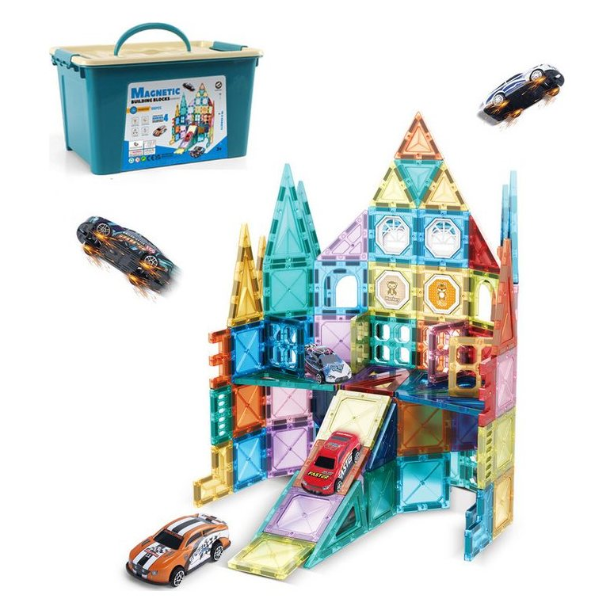
Magnetbausteine-Set 100 Teile (Magnetfliesen, Kunststoff, STEM/Montessori)

RC-Stuntauto 2,4 GHz (360°-Rotation, Akku, amphibisch)
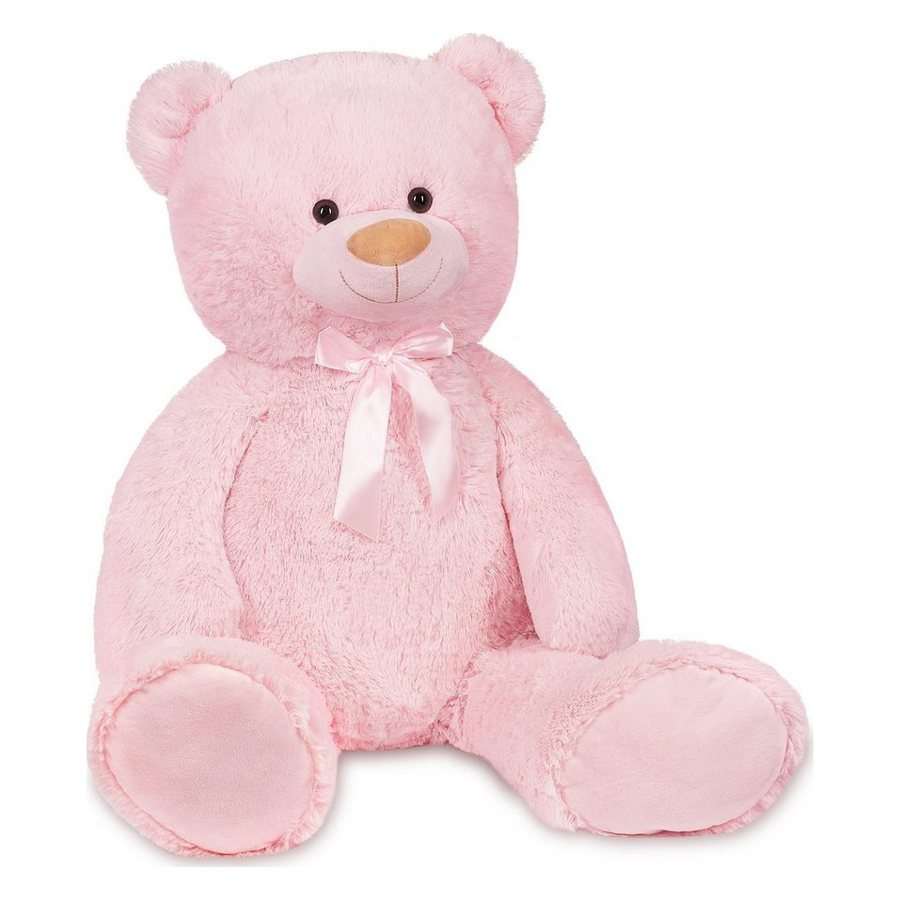
Riesen-Teddybär 100 cm (Plüsch, extra weich)
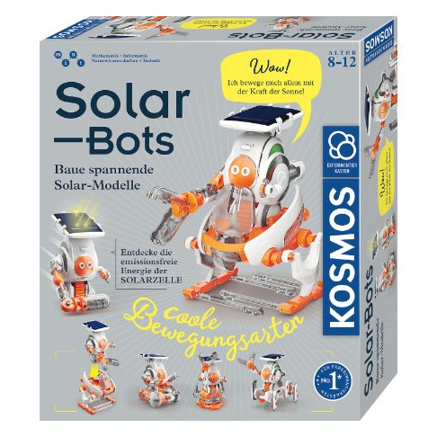
STEM-Bausatz Solar-Roboter 12-in-1 (ohne Batterien, ab 8 Jahren)
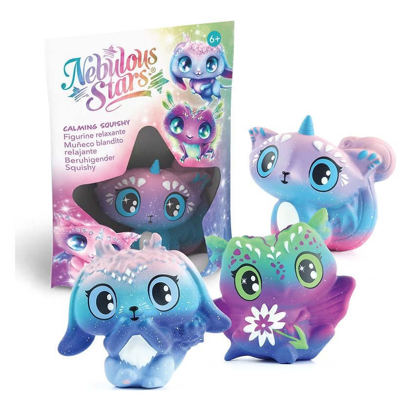
Squishy-Dumplings und Food-Squishies (Dumpling, Butter, Croissant, Kuchenstück, Mystery-Bag, TPR/PU-Schaum)Weiche, langsam rückstellende Drück-Figuren in Food-Formen, einzeln oder als Mystery-Bag, ohne Flüssig- oder Wasserperlenfüllung.

Stress-Squeeze-Würfel und -Bälle (Cube, Gumdrop, Fuzzball, Eigendesign, TPR-/Gel-Füllung)Weiche, halbtransparente Drückwürfel mit Gel- oder Teigfüllung in Eigendesign, die langsam in Form zurückkehren.

Taba-/Mochi-Squishies aus Silikon und Kuchen-Squishies (Zucker-, Frucht-, Kuchenformen, Taba-Stil, Eigendesign)Weiche Taba- und Mochi-Squishies sowie Kuchenformen für ASMR-Haptik, als Kinder-Sammelfigur oder Büro-Stressartikel für Erwachsene.

Butter-Slime-Set 4 Farben (Fertigslime, Butter/Cloud, nicht klebend)Weicher, dehnbarer Fertigslime in vier Farben (Blau, Rosa, Grün, Gelb), sofort spielbereit und ohne separates Aktivator-Set.
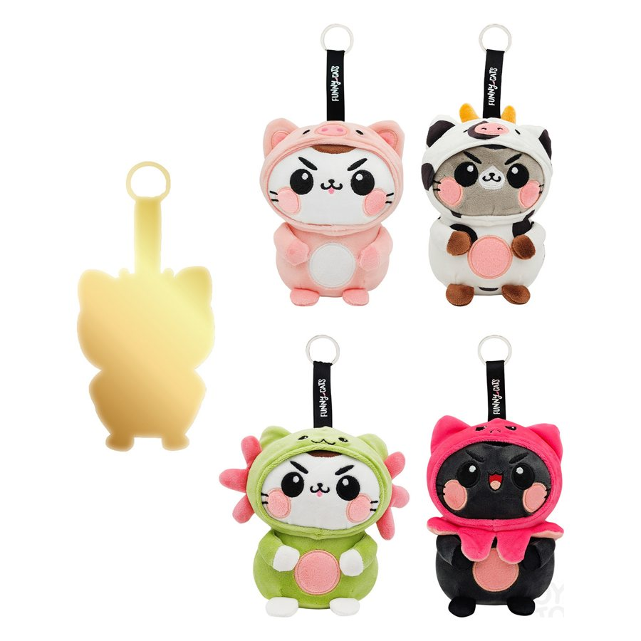
Plüsch-Taschenanhänger als Blind-Box-Serie (Mini-Plüsch, Karabiner, Eigencharaktere)Sammelserie aus weichen Mini-Plüsch-Anhängern mit Karabiner in Blind-Box-Verpackung, 6-12 Motive, eigenes Charakterdesign.
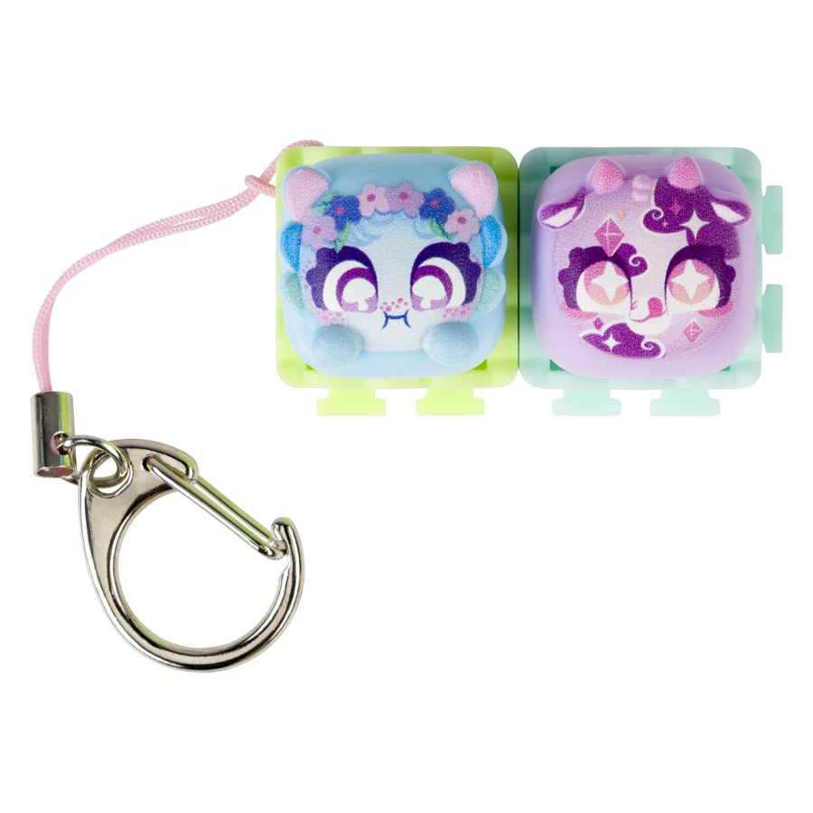
Tastenkappen-Fidget-Anhänger (Keycap-Klicker mit Schalter, Sammelmotive, optional LED)Kleiner Klicker-Anhänger in Form einer Tastenkappe mit echtem Schaltergefühl, Eigendesign und optionaler LED.
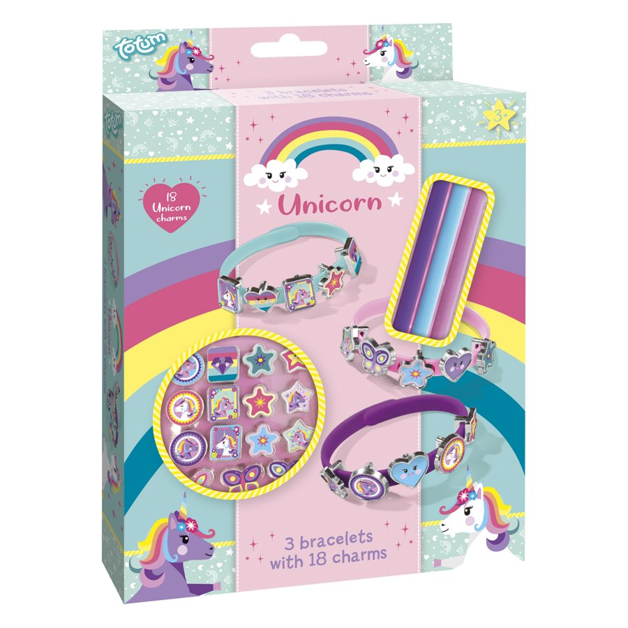
Freundschaftsarmband-Bastelset (Perlen, Buchstaben, Gummifaden, Kinder- und Teenager-Kit)Farbenfrohes Perlen-Set zum Selbstgestalten und Verschenken persönlicher Armbänder.

Mini-Spielzeug-Sortiment für Piñata und Mitgebsel (100-200 Stück: Mini-Squishies, Fidget-Minis, Radierer, Stempel, Jo-Jos)Gemischtes Kleinspielzeug-Sortiment als Füllung für Piñatas, Kindergeburtstage und Schultüten.

Spielzeug-Adventskalender mit 24 Squishy-/Fidget-Überraschungen (Kartonbox 18 x 28 cm)

Klemmbaustein-Blumenstrauß und Bonsai-Bausatz (Eigendesign, Kidult-Dekoset)Botanisches Klemmbaustein-Set aus ABS: Blumenstrauß oder Bonsai zum Selberbauen, als dauerhafte Dekoration für Bastelfans und Erwachsene.

Fidget-Slider / Push-Card aus Metall (magnetisch geführter Schieber, Haptik-Gadget)Haptisches Metall-Gadget im Kartenformat: Der Schieber rastet magnetisch ein und klickt satt – für Erwachsene und Jugendliche am Schreibtisch.

Footbag / Hacky Sack (Kunstleder oder Häkel, Granulatfüllung, auch als Werbeartikel)Handlicher, granulatgefüllter Kick-Beutel: der wiederentdeckte Retro-Klassiker für Schulhof, Strand und Werbeaktionen.
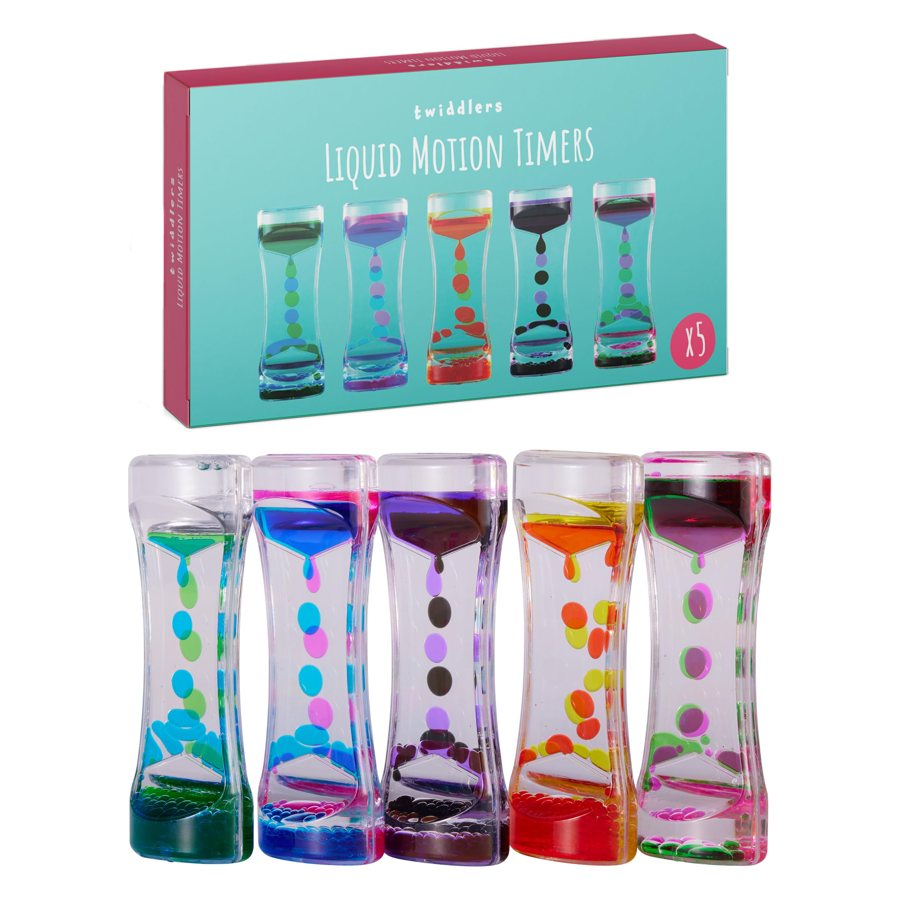
Liquid-Motion-Timer / Sensorik-Sanduhr (Tropfen-Sanduhr, Öl-Wasser, Calm-Down)Beruhigender Flüssigkeits-Timer im Acrylgehäuse, bei dem Tropfen langsam nach unten wandern; Glitzer-Füllung als Variante auf Anfrage.

Magic Sand / Zaubersand 1 kg (Farben nach Wahl, optional mit Formen und Wanne)Formbarer, nicht austrocknender Spielsand für sensorisches Spielen drinnen, ohne Markenaufdruck, mit individueller Farbe und Verpackung.

Kuschel-Plüschkissen rund in Marshmallow-Form (Eigendesign, ca. 35 cm, extra weich)Rundes, extra weiches Plüschkissen mit Stickgesicht in Marshmallow-Optik zum Kuscheln, Dekorieren und Verschenken.

Leuchtmal-Plüschtier mit Leuchtstift (nachleuchtender Plüsch zum Zeichnen mit Licht, ohne Farbe)Plüschtier mit nachleuchtendem Stoff: Kinder zeichnen im Dunkeln mit einem Leuchtstift leuchtende Motive, ohne Farbe und ohne Schmutz.
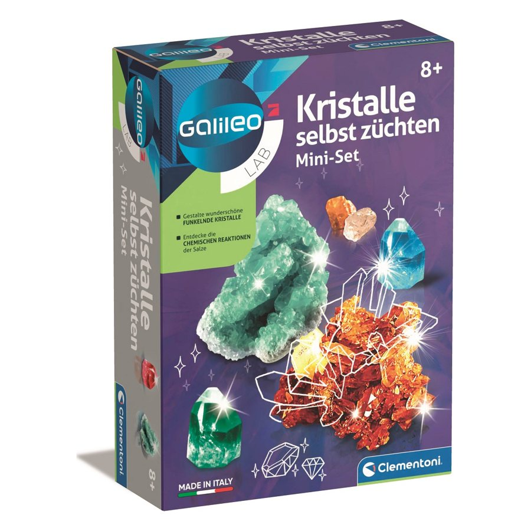
Kristallzucht-Set für Kinder (Kristallsalz, Formen, Anleitung, STEM-Experimentierkasten)Kompaktes Experimentierset, mit dem Kinder in einfachen Schritten eigene Kristalle wachsen lassen: STEM-Geschenk für Geburtstag und Weihnachten.

Ausgrabungs-Set Dino-Fossil (Gipsblock mit Skelett, Werkzeug, Einzelbox oder Display)Gipsblock mit verstecktem Dino-Skelett, das Kinder mit Werkzeug freilegen und anschließend zusammensetzen.

Seifenblasenpistole mit LED (Akku, Bazooka-Form, Nachfüllflasche, Outdoor- und Party-Toy)Akku-Seifenblasenpistole im Bazooka-Design mit LED-Lichteffekt für Garten, Strand und Feiern.

Stomp-Raketen-Set (Fuß-Luftdruck-Launcher, 3 Schaumstoff-Raketen, Outdoor-Spielzeug)Fußpedal-Launcher, der per Luftdruck weiche Schaumstoff-Raketen in die Höhe schießt – Bewegungsspaß für Garten und Park.
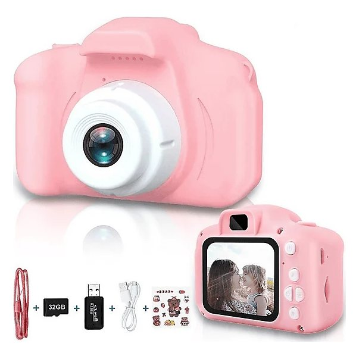
Digitale Kinderkamera (1080p Foto/Video, Silikonhülle, Selfie-Linse, SD-Karte, ohne WLAN)Robuste Spielzeugkamera für Kinder ab 3 Jahren mit Foto-, Video- und Selfie-Funktion – offline, ohne App und Cloud.
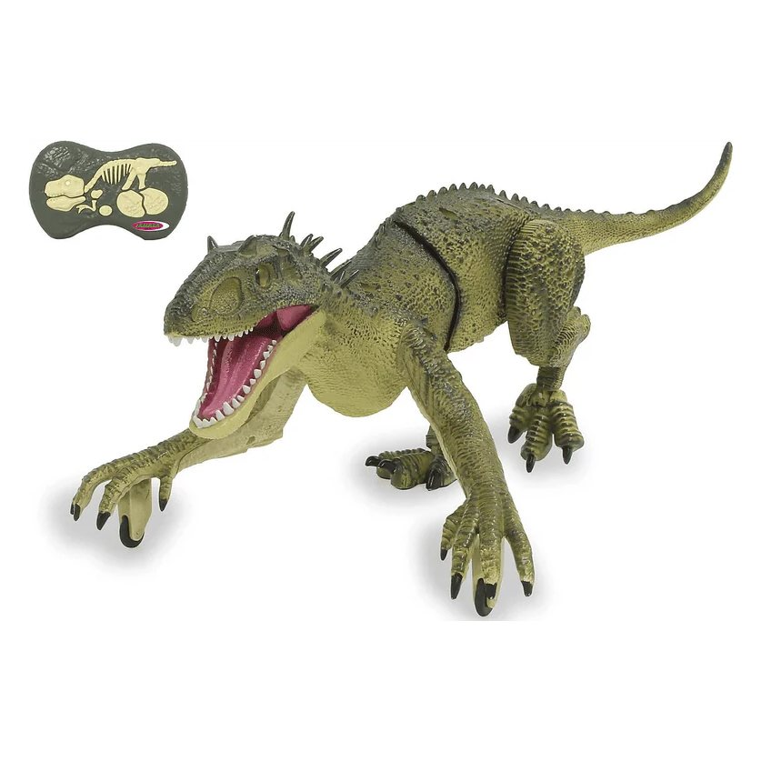
RC-Dinosaurier (T-Rex, ferngesteuert, laufend, mit Sound, Licht und Wassernebel, Akku)Laufender, ferngesteuerter Dinosaurier mit Brüllen, Leuchteffekten und Sprühnebel – Showeffekt für Kinder.

Interaktiver Roboterhund (Touch- und Sound-Sensoren, Laufen, Fernbedienung, offline, ohne Cloud/KI-App)Laufender Roboterhund mit Touch-Sensor, Bellen, Liedern und Fernbedienung – Begleiter und Programmierspielzeug ohne Cloud.

Holzbausteine-Set 100 Teile (bunt, Aufbewahrungsbox, Motorik/Montessori)Hundert bunte Holzbausteine in verschiedenen Formen zum Bauen, Stapeln und Sortieren, in Box oder Karton verpackt.
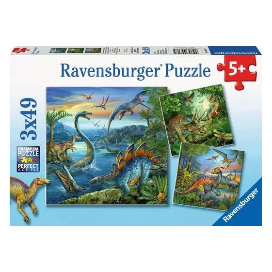
Kinderpuzzle-Set 3-in-1 (Karton, Dino-/Tiermotive, 144 Teile)Drei Kinderpuzzles mit je 48 Teilen und Dino- oder Tiermotiven in einer gemeinsamen Faltschachtel.
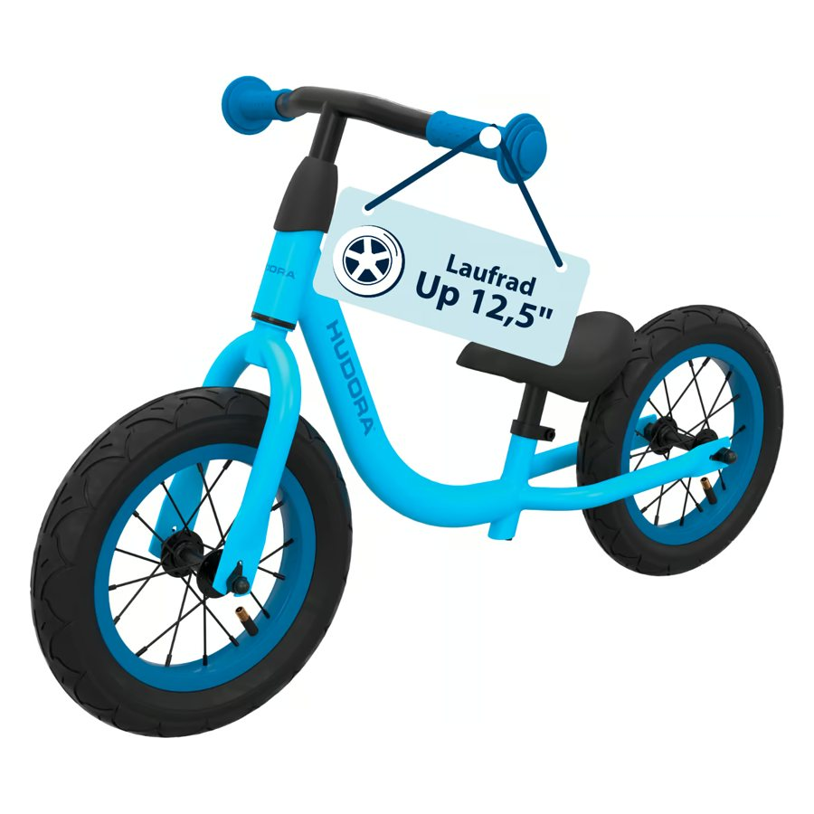
Kinder-Laufrad 12 Zoll (Stahlrahmen, EVA-Reifen, höhenverstellbar)

Akku-Wasserblaster (vollelektrisch, nachfüllbar, ab 8 Jahren)

Silikon-Beißring-Rassel-Set 4-teilig (BPA-frei, Babys 0-12 Monate)Weiche Silikon-Greiflinge mit Rassel für die Zahnungsphase.

Holz-Stapelringe Regenbogen (Montessori, Kleinkinder)Bunte Holzringe zum Stapeln und Sortieren.
Holz-Knopfpuzzle Tiermotive (Steckpuzzle, ab 1 Jahr)Steckpuzzle mit Holzknöpfen für kleine Hände.

Plastik-Spielkarten Poker 54 Blatt (PVC, wasserfest)Wasserfeste Pokerkarten aus PVC, abwischbar.

Speedcube 3x3 Stickerless (Magnet optional)

Holz-Xylophon Elefant 8 Töne (Kleinkinder, mit Schlägel)Kinderxylophon aus Holz mit Schlägel.

Sandspielzeug-Set 9-teilig (Eimer, Schaufel, Rechen, Förmchen, Netzbeutel)Strand- und Sandkasten-Set aus Kunststoff.

Knete-Set 6 Dosen à 50 g (ungiftig, Kinder ab 3 Jahren)Knetmasse in sechs Farben für Kinder.